ну или же «Ответы на часто задаваемые вопросы»
Данные группы созданы чтобы пользователи могли оставлять комментарии от их имени. Зачем? У всех свои цели и причины для использования этих групп.
Редакторами называют тех, кто получил возможность комментировать от имени группы. Их так называют, потому что возможность комментирования появляется только при получении полномочия «Редактор» в группе.
Смотрим последнюю группу в списке, если там нет ста подписчиков — вступаем и ждём. Если же в последней группе есть сто подписчиков, тогда ждём новую группу. Но если Вы тут впервые, Вы можете написать нам ВКонтакте и попросить редактора.
Редактор выдаётся автоматически, после достижения 50 и 100 подписчиков в группе. После достижения ста подписчиков и выдачи редакторов, создаётся новая группа.
Список групп Вы можете посмотреть здесь.
Документы и видео не стоит отправлять с комментарием, потому что они прикрепляются от Вашего имени, а не от имени группы.
И да и нет. ВКонтакте отсутствуют конкретные правила для подобных групп (ибо функциональность мы используем не по назначению), но при этом существует «негласное» правило. В случае, если на Ваш комментарий от имени группы отправят жалобу, модератор ВКонтакте её обработает и будет расценивать Ваш комментарий как спам («Даже один неуместный комментарий может быть воспринят как спам» — сказал Агент Поддержки). Алгоритмы ВКонтакте таковые комментарии не трогают. Просто помните это и не забывайте, что все комментарии оставленные от имени групп закреплены за Вашей страницей, поэтому технически никакой «анонимности» не существует. Так же настоятельно рекомендуем ознакомиться с разделом «Правовая информация» и «Центр безопасности» чтобы знать правила ВКонтакте и любые последствия.
Список заблокированных находится здесь.
Начиная с 6 августа 2020 года появилась возможность отправить запрос на пересмотр блокировки, подробнее об этом Вы можете прочитать здесь.В таких случаях у Вас должны быть предположения кто это делает. Если они у Вас есть — напишите нам ВКонтакте, прикрепив ссылку на комментарий. Если комментарий был опубликован недавно, то мы сможем посмотреть кто его автор, выдать Вам эту информацию и заблокировать пользователя. Если же комментарий был оставлен давно, рекомендуем воспользоваться встроенными в социальную сеть средствами по жалобе на комментарий или написать в службу поддержки ВКонтакте.
Мы категорически не поощряем травлю или любое другое проявление агрессии к человеку. Если комментарий был оставлен недавно, напишите нам ВКонтакте, прикрепив ссылку на комментарий. Если же комментарий был оставлен давно, рекомендуем воспользоваться встроенными в социальную сеть средствами по жалобе на комментарий или написать в службу поддержки ВКонтакте.
Администрация не в курсе, что пишут пользователи от имени группы. Так как у нас нет средств по отслеживанию комментариев. Администрация не несёт ответственности за содержимое комментариев.
Администрация не изменяет статус групп, это делают редакторы. Так же Администрация не несёт ответственности за содержимое статуса.
Рады слышать, что Вы хотите помочь группам. Если Вы хотели помочь группам своим временем, то Вы можете подписаться на нашу рассылку «Волонтёры» и ждать, когда понадобиться Ваша помощь. Так же Вы можете помочь группам, отправить жалобу нам ВКонтакте на участника, если он нарушил правила или предлагать новые идеи по развитию групп.
Нет. После случая 29 декабря 2019 года, мы запрещаем использовать оформления групп в любых целях, как и текст со всеми материалами с этого сайта. Это правило относиться ко всем версиям этого текста и других материалов включая оформлений. В случае обнаружения такового контента он будет удалён.
Если Вы нашли группу, которая копирует наше оформление или текст с этого сайта, Вы можете отправить нам её ВКонтакте.
Вы можете настроить работу функции в разделе настроек, пункт «Аккаунт» → «Управление сообществами» → «Комментирование от имени сообщества».
Если у Вас остались вопросы, Вы можете написать нам ВКонтакте.
Если Вы нашли ошибку на этом сайте, отправьте нам её ВКонтакте или в GitHub.
P.S. Предложения и новые идеи приветствуются. 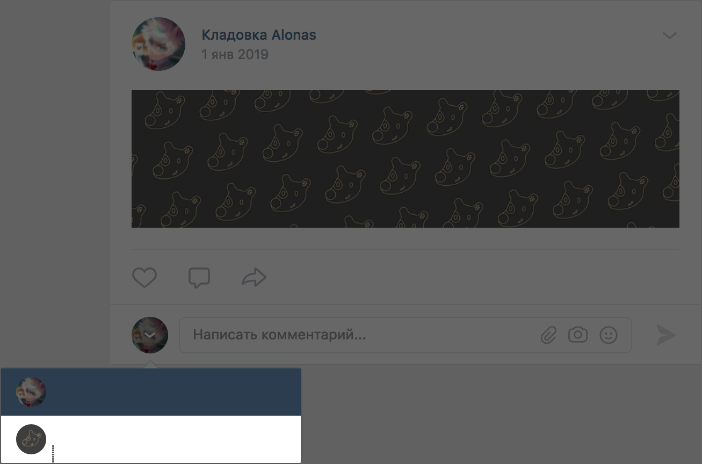
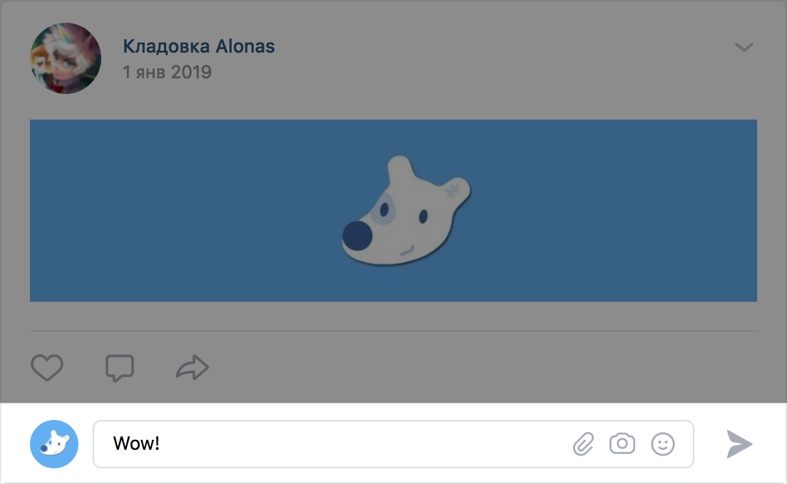
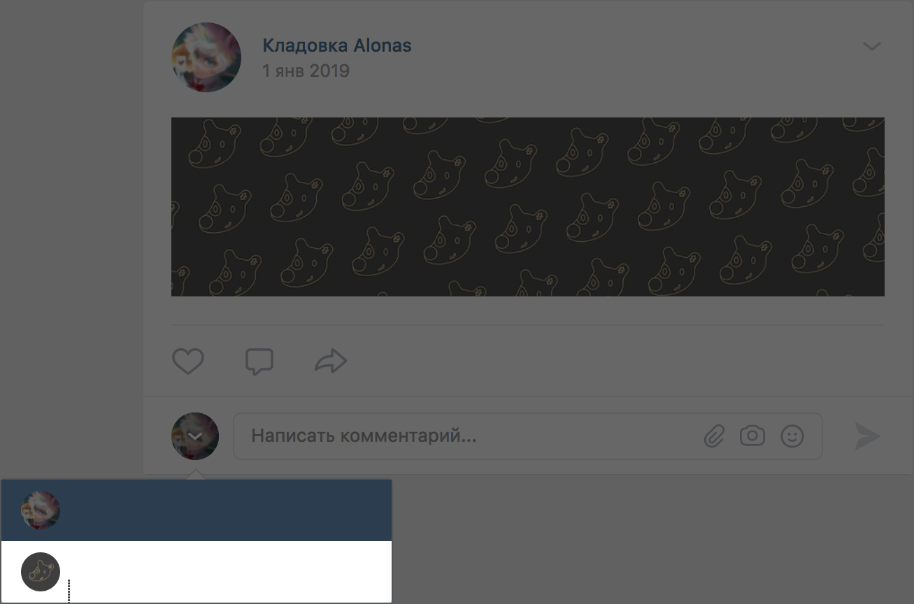
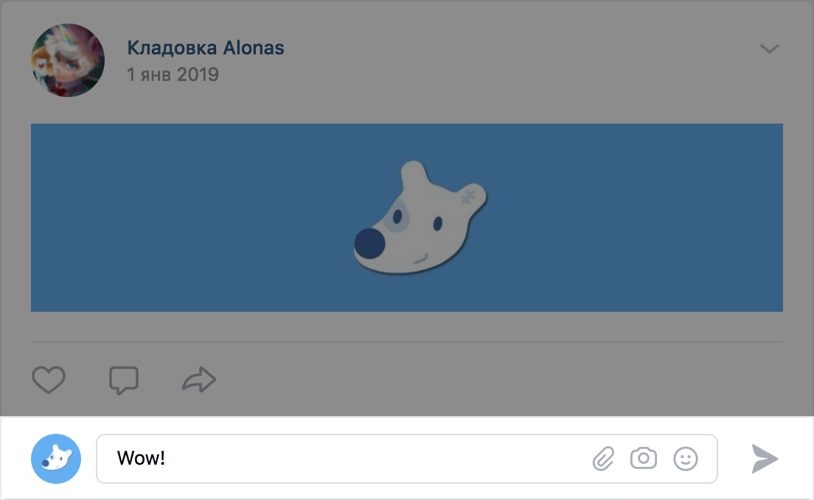
m.vk.com:
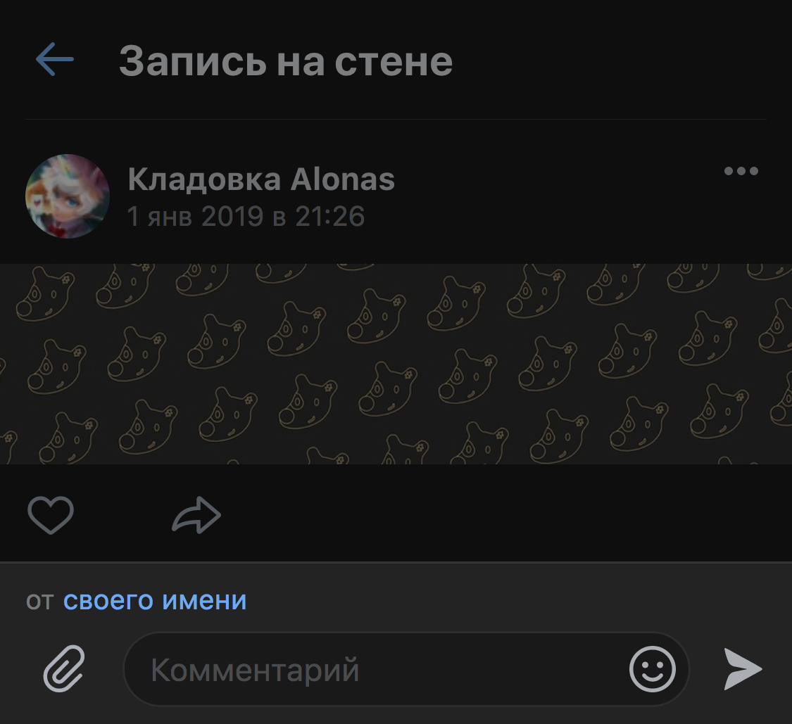 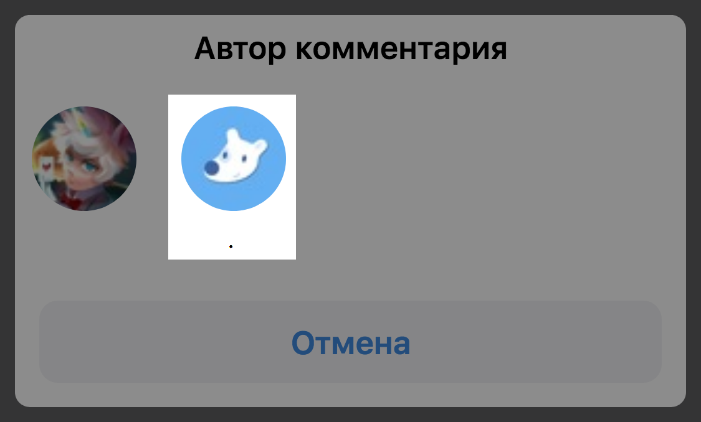 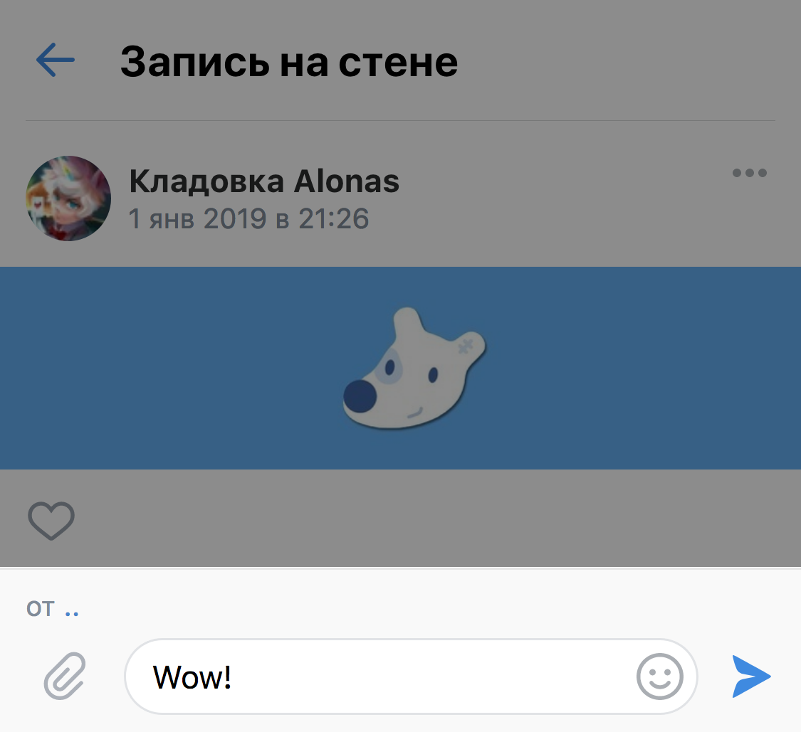Официальный клиент для Android:
 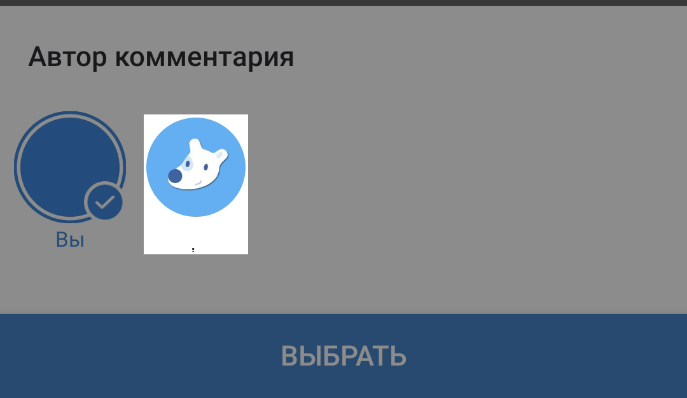
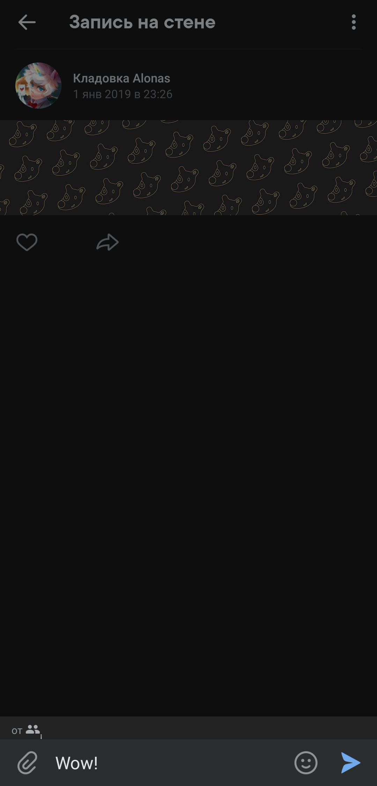
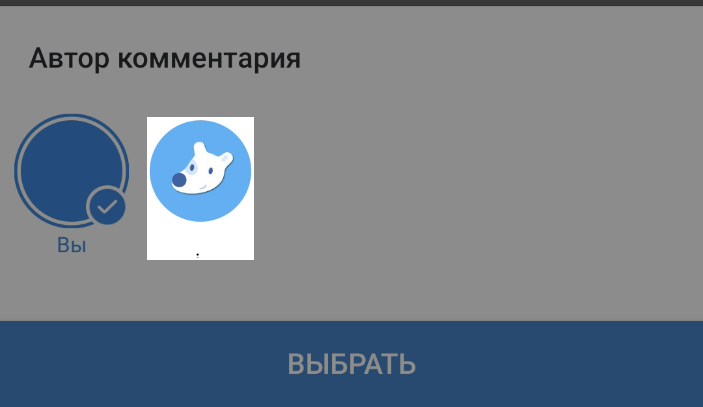
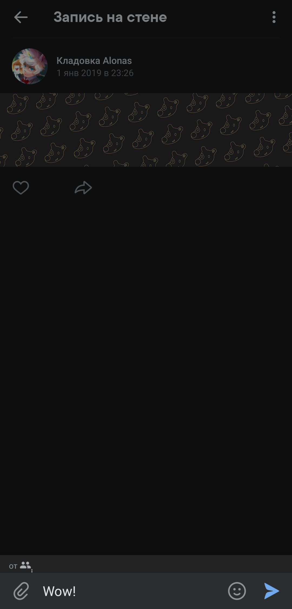
Если у Вас сторонний клиент, спрашивайте его разработчиков
Официальный клиент для iOS:
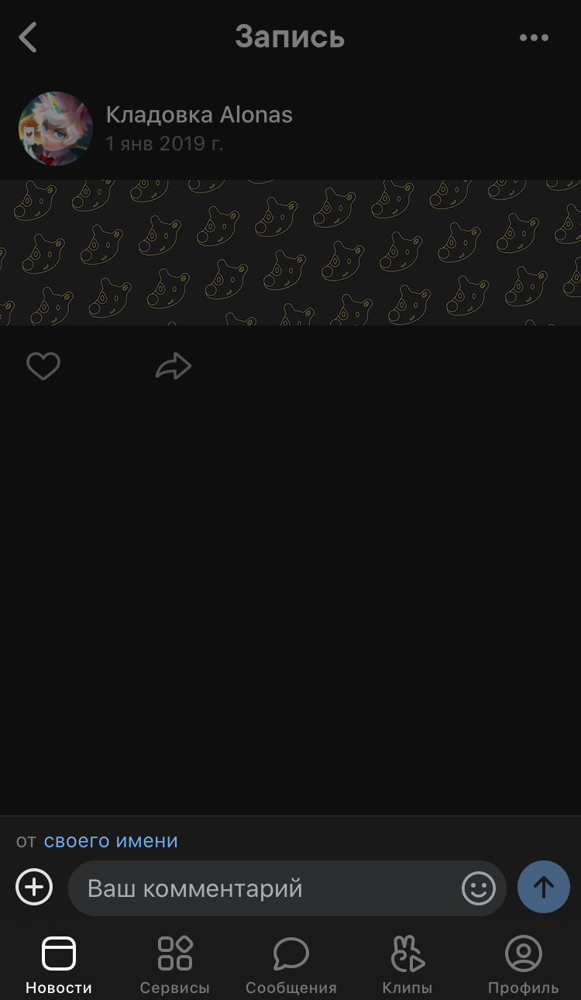 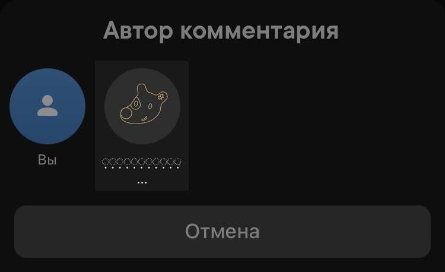 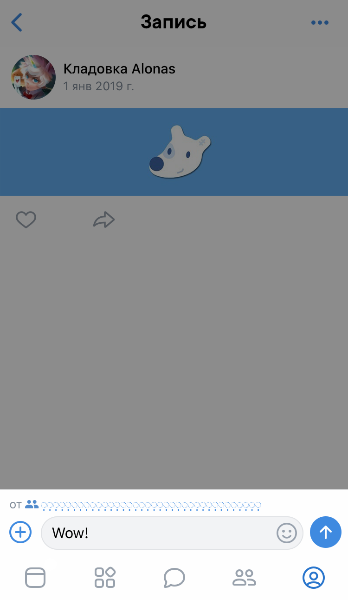С 🖤 Alonas
{kind=link}
{kind=link}
{kind=link}
{kind=link}
{kind=link}
{kind=link}
{kind=link}
{kind=link}
{kind=link}
{kind=link}